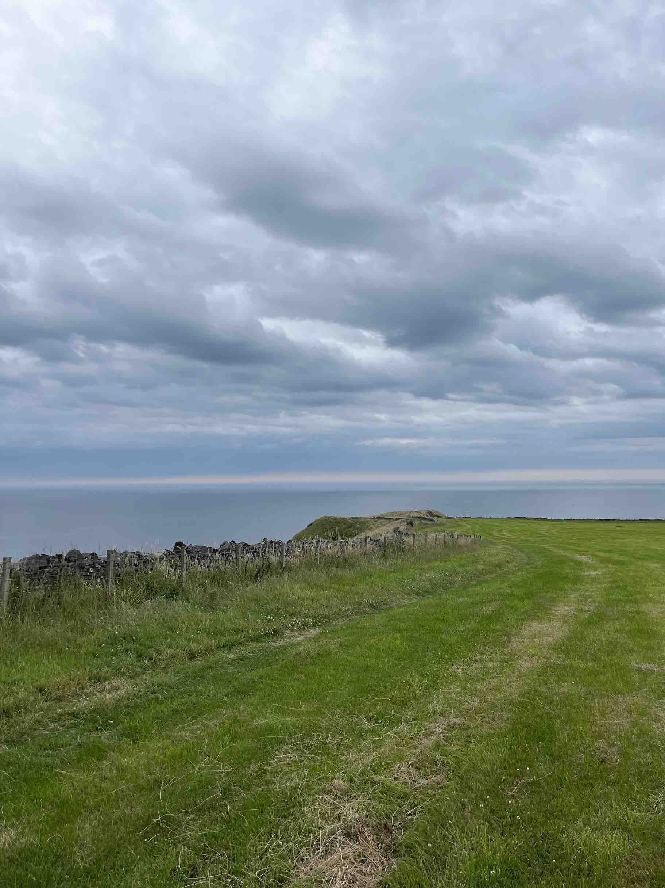
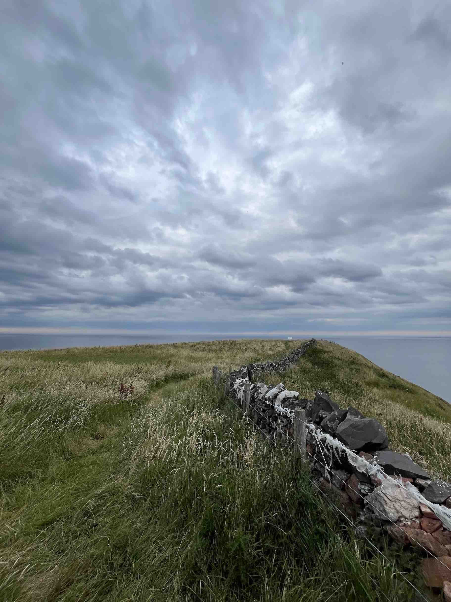
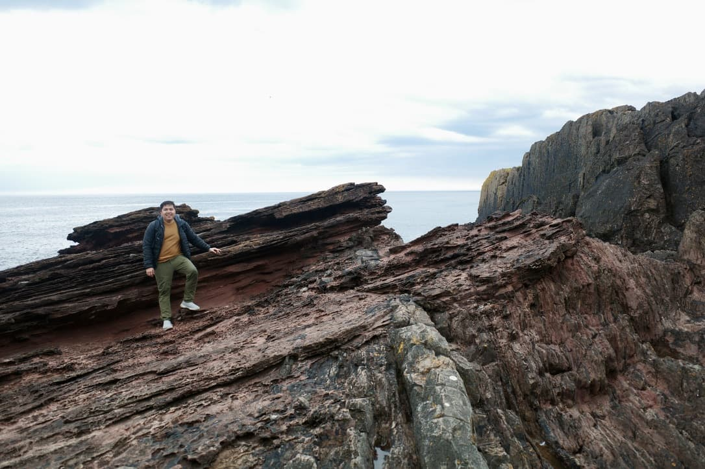

Edinburgh Trip
Early summer 2024, I visited one of the finest part Scotland can offer - Edinburgh and Glasgow. Especially Edinburgh, where I visited National Museum of Scotland. It was a blast to say the least. For a geologist, this place was a “gem” - and you can really found ones. Few photos here just to show how good their collection are.
One of the coolest collection they have was this photo featuring the founding father of modern geology - James Hutton. Highlighting the inspiration on his theory of earth - and outcrop that famously featured in any geological textbook, Siccar Point. My first thought was - Siccar Point is in Scotland?
Knowing how good of an opportunity this is - not everyday I can visit Edinburgh, and with the nice weather too. I quickly scan the google map and plan the visit right away. It was not as smooth as I would like.
Siccar Point Quest
So of we went, on our way we saw some unique places like this thermal nuclear site, and just some small village - would be nice to spend the evening someday.


The Siccar Point is located near Cockburnspath beach, but the map is not the easiest to navigate, and the pathway is unclear - at least when I visited. We passed the entrance multiple times, without knowing where to stop our vehicle. Stop (1) is where the trucks filled with quarry typically stopped - as there was a quarry nearby. Once passed this stop, we should stop around parking area (where the red arrow is), but instead we mistakenly stopped at (3). You might want to not repeat our mistake here.
Across the parking area, you will be welcomed by a small gate, with a wayfinder on Siccar Point. This is actually the first gate to Siccar Point, as you will be seeing another gate before getting down the cliff.

Just follow the stone fence surrounding the hill, as shown here, and enjoy the magnificent view of Scotland towards North Sea. Just an amazing scenery… I would come here just for the view alone.

The second photo above is where you could see the glimpse of Siccar Point, right next to a shore (sort of like a cape). Once passing this area, you will have to turn left, and jumpover a small goat/sheep gateway to get into the second stop before the cliff.



The second wayfinder would be the last one before getting down the steep cliff. It is cool to see the wayfinder is ilustrating how the unconformity looks like (photo), and how does it form geologically (structurally).
I have to remind you, the way down is not as easy as one thinks. The cliff is steep one, and there is only a rope and some man-made mud stairs going down the cliff. You really have to climb your way down, by hanging by the rope- carefully. I have only got one picture as I am catching my breath when going up the rope.

The Siccar Point!
After all the effort, I finally managed to climb down safely, it was around 7pm when I arrived at the spot - so I cant spend too much time. I managed to take some photos of the infamous Siccar Point itself, although I must say the surrounding is as cool as the Siccar Point itself.


If I can redo it again, I would probably pick summer time and earlier timing in the morning to enjoy the sun and view. It was definitely worth a revisit - sometimes, as I only managed to take few pictures. Would love to snap more view and perhaps just sitting down the shore looking at the sea and eating some sandwich on top of the unconformity!
Finally, exhibit A - evidence that I visited the place. A selfie.

As geologist - this has been a wholesome experience. I am forever grateful!!!
Citation
@online{wijaya2025,
author = {Wijaya, A.A.},
title = {Siccar {Point} {Trip} - {The} {Birth} of {Unconformity}},
date = {2025-05-25},
url = {https://adtarie.net/posts/20250525_siccarpoint-trip/},
langid = {en}
}